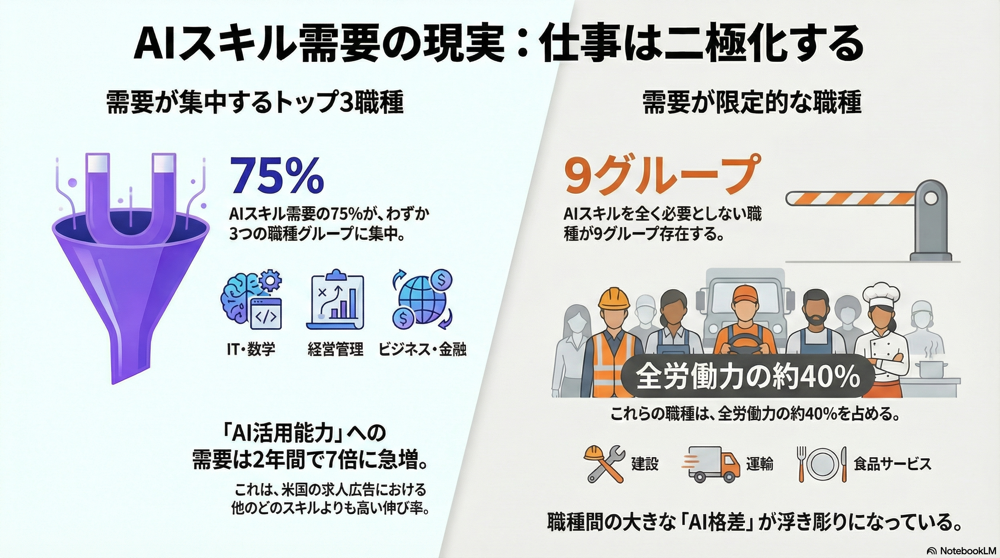

AIスキル格差の現実と「パートナーシップ」への移行
マッキンゼーは、AIによる大規模な雇用喪失よりも、ワークフロー全体の「変革」と「スキル格差」に注目すべきと分析しています。
AIフルーエンシー（活用能力）の需要は2年で7倍に急増。人間の役割は「実行」から、AIを監督する「オーケストレーション」へとシフトしています。
レポートのハイライト
【衝撃のデータ】
米国のAIスキル需要の75%が、わずか3つの職種群（コンピューティング・数学、経営管理、ビジネス・金融）に集中しています。
一方で、建設・運輸・サービスなど全労働力の40%を占める職種には、AIの波がまだ本格的に及んでおらず、深刻な「AIスキル格差」が生まれつつあります。
詳細と主な特徴
本レポートでは、AIがワークフローに与える影響を測る「スキル変化指数（SCI）」などの新指標も紹介されています。
重要ポイント
スキル格差の二極化
高度な認知能力を要する専門職に需要が集中。AIの恩恵を受ける層と、取り残される層の二極化リスクが顕在化しています。
人間とAIのパートナーシップ
未来の仕事は「人間、エージェント、ロボット」の協働です。これにより2030年までに米国で2.9兆ドルの経済価値創出の可能性があります。
ワークフロー再設計
単なるタスク自動化ではなく、プロセス全体の再設計が鍵。人間の補完的な能力（創造性や対人スキル）への需要が高まります。
今後の展望
AIの影響は今後、現在は無関係に見える職種へも波及していくと予測されます。組織にはワークフローの再設計が、個人にはプロアクティブなリスキリング（特にAIフルーエンシーの習得）が急務です。「AIに使われる」のではなく、「AIを指揮する」能力が、次世代の必須スキルとなるでしょう。